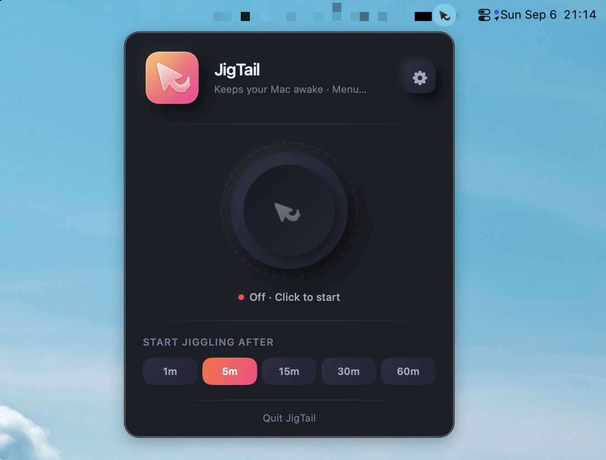
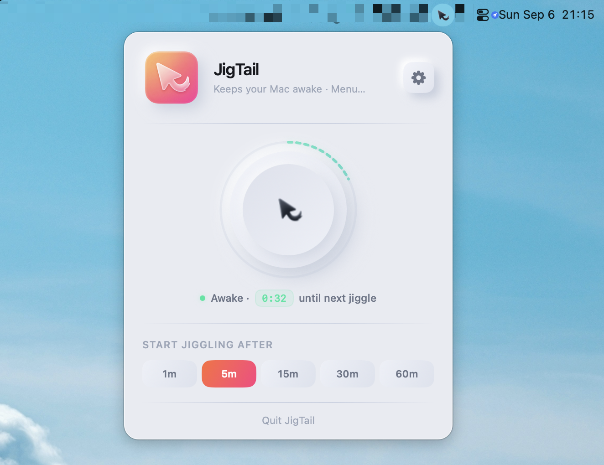

JigTail
Keeps your Mac awake — only when it actually needs to.
A tiny, free, native menu-bar app that waits until you're idle, then nudges the cursor just enough to hold off sleep and the screensaver, so a render, build, download, or backup can finish unattended.
Free · Open source · No accounts, no telemetry
A live, compressed replica of the real popover
“Screensavers and sleep don't know the difference between you stepping away and you waiting on a five-hour export.”
Why JigTail exists
What it does
Small and specific: it holds off sleep while you're away, and disappears the second you're back.
Conditional triggers
Skip the idle wait entirely. Jiggle only while a specific app is running, the CPU is busy, or Music or Spotify is playing — combined with simple OR logic.
Idle-aware
Sits quietly until you've actually stepped away. The instant it detects real input again, it stops.
One-tap manual control
A knob in the menu-bar popover shows exactly what's happening — off, waiting, or actively jiggling — with a live countdown ring.
Sleep prevention
Holds an IOPMAssertion for the session as a belt-and-suspenders measure alongside the cursor nudge itself.
Launch at login
Starts itself via macOS's modern SMAppService — no login-item hacks.
Matches your theme
Light, dark, or system — independent of the rest of macOS.
Nothing leaves your Mac
JigTail asks for exactly two permissions, both used only for the jiggle itself.
Every setting — idle threshold, jiggle interval, triggers, theme — stays in local UserDefaults. Accessibility lets it move the cursor; Apple Events, only if you turn on the music trigger, lets it ask Music or Spotify whether they're playing.
Looks native, because it is
Built with SwiftUI on a neumorphic design system shared with PawseKeys, and it follows your system appearance automatically.


Build it yourself
MIT licensed and small enough to read in an afternoon. No signed release yet — grab the source and build your own.
macOS 13 Ventura or later · Apple Silicon · Xcode 15+